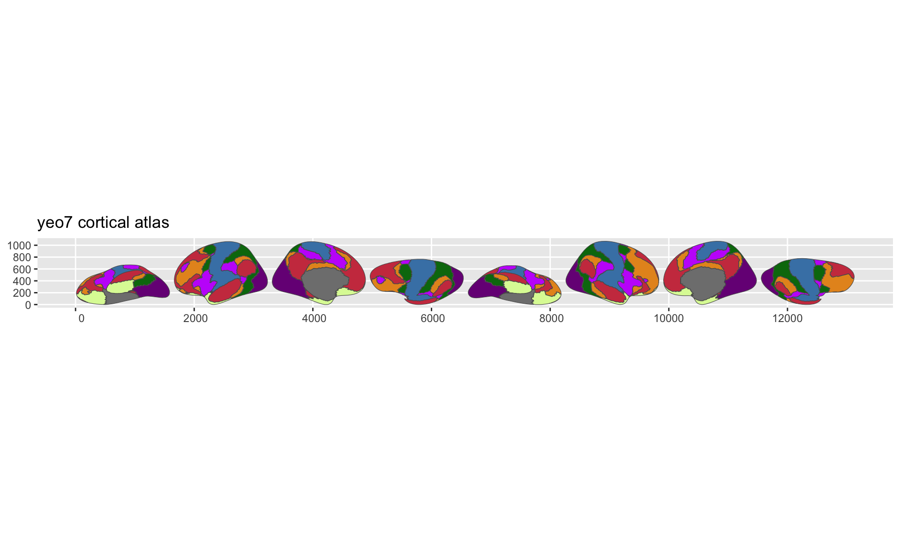

Cortical parcellations divide the brain surface into labelled regions. They come from FreeSurfer annotation files, where each vertex on the cortical mesh is assigned to a region like “superior frontal gyrus” or “precuneus.”
This tutorial walks through the full pipeline for turning an annotation into a ggseg_atlas you can plot with ggseg and ggseg3d. We’ll use the Yeo 7-network parcellation as a working example — it has only 7 regions per hemisphere, so the pipeline runs quickly.
What you need
- FreeSurfer installed with the
fsaverage5subject - ImageMagick for 2D geometry extraction
- Chrome/Chromium for 3D screenshots
Locating annotation files
FreeSurfer stores annotation files alongside the subject’s surface data. You need the full paths to the lh. and rh. annotation files:
Step 1: 3D-only atlas for fast iteration
Before committing to the full 2D extraction pipeline, verify your annotation looks right with a 3D-only atlas. This reads the annotation file, extracts vertex assignments, and returns in seconds:
yeo7_3d <- create_cortical_from_annotation(
input_annot = annot_files,
atlas_name = "yeo7",
steps = 1
)
yeo7_3d
#>
#> ── yeo7 ggseg atlas ──────────────────────
#> Type: cortical
#> Regions: 8
#> Hemispheres: left, right
#> Palette: ✔
#> Rendering: ✖ ggseg
#> ✔ ggseg3d (vertices)
#> ──────────────────────────────────────────
#> # A tibble: 16 × 3
#> hemi region label
#> <chr> <chr> <chr>
#> 1 left FreeSurfer_Defined_Medial_… lh_F…
#> 2 left 7Networks_1 lh_7…
#> 3 left 7Networks_2 lh_7…
#> 4 left 7Networks_3 lh_7…
#> 5 left 7Networks_4 lh_7…
#> 6 left 7Networks_5 lh_7…
#> 7 left 7Networks_6 lh_7…
#> 8 left 7Networks_7 lh_7…
#> 9 right FreeSurfer_Defined_Medial_… rh_F…
#> 10 right 7Networks_1 rh_7…
#> 11 right 7Networks_2 rh_7…
#> 12 right 7Networks_3 rh_7…
#> 13 right 7Networks_4 rh_7…
#> 14 right 7Networks_5 rh_7…
#> 15 right 7Networks_6 rh_7…
#> 16 right 7Networks_7 rh_7…steps = 1 tells the pipeline to stop after reading annotation data. The result works with ggseg3d but has no 2D geometry yet.
Step 2: Full pipeline with 2D geometry
The full pipeline takes screenshots of each region from multiple view angles, extracts contours, and converts them to sf polygons. This is the slow part — it needs FreeSurfer, Chrome, and ImageMagick:
output_dir <- file.path(tempdir(), "yeo7_tutorial")
yeo7_raw <- create_cortical_from_annotation(
input_annot = annot_files,
atlas_name = "yeo7",
output_dir = output_dir,
tolerance = 1,
smoothness = 2,
skip_existing = TRUE,
cleanup = FALSE,
verbose = TRUE
)
#>
#> ── Creating brain atlas "yeo7" ───────────
#> ℹ Input files: ']8;;file:///Applications/freesurfer/7.4.1/subjects/fsaverage5/label/lh.Yeo2011_7Networks_N1000.annot/Applications/freesurfer/7.4.1/subjects/fsaverage5/label/lh.Yeo2011_7Networks_N1000.annot]8;;' and ']8;;file:///Applications/freesurfer/7.4.1/subjects/fsaverage5/label/rh.Yeo2011_7Networks_N1000.annot/Applications/freesurfer/7.4.1/subjects/fsaverage5/label/rh.Yeo2011_7Networks_N1000.annot]8;;'
#> ℹ Setting output directory to ']8;;file:///var/folders/y5/zlbbcqn56gx1tcg6xfb425100000gp/T//Rtmpwix4Bl/yeo7_tutorial/var/folders/y5/zlbbcqn56gx1tcg6xfb425100000gp/T//Rtmpwix4Bl/yeo7_tutorial]8;;'
#> ✔ 1/8 Loaded existing atlas data
#>
ℹ 2/8 Taking full brain snapshots
file:////private/var/folders/y5/zlbbcqn56gx1tcg6xfb425100000gp/T/Rtmpwix4Bl/file22465346108a.html screenshot completed
#>
✔ 2/8 Taking full brain snapshots [2.8s]
#>
ℹ 3/8 Taking region snapshots
file:////private/var/folders/y5/zlbbcqn56gx1tcg6xfb425100000gp/T/Rtmpwix4Bl/file22464304f777.html screenshot completed
#> file:////private/var/folders/y5/zlbbcqn56gx1tcg6xfb425100000gp/T/Rtmpwix4Bl/file2246e08b720.html screenshot completed
#> file:////private/var/folders/y5/zlbbcqn56gx1tcg6xfb425100000gp/T/Rtmpwix4Bl/file2246464a390c.html screenshot completed
#> file:////private/var/folders/y5/zlbbcqn56gx1tcg6xfb425100000gp/T/Rtmpwix4Bl/file2246761357e2.html screenshot completed
#> file:////private/var/folders/y5/zlbbcqn56gx1tcg6xfb425100000gp/T/Rtmpwix4Bl/file22463092f974.html screenshot completed
#> file:////private/var/folders/y5/zlbbcqn56gx1tcg6xfb425100000gp/T/Rtmpwix4Bl/file2246543cc979.html screenshot completed
#> file:////private/var/folders/y5/zlbbcqn56gx1tcg6xfb425100000gp/T/Rtmpwix4Bl/file22461919aa83.html screenshot completed
#> file:////private/var/folders/y5/zlbbcqn56gx1tcg6xfb425100000gp/T/Rtmpwix4Bl/file22462e9a6b1b.html screenshot completed
#> file:////private/var/folders/y5/zlbbcqn56gx1tcg6xfb425100000gp/T/Rtmpwix4Bl/file22461a563f6f.html screenshot completed
#> file:////private/var/folders/y5/zlbbcqn56gx1tcg6xfb425100000gp/T/Rtmpwix4Bl/file22464fd1b9bf.html screenshot completed
#> file:////private/var/folders/y5/zlbbcqn56gx1tcg6xfb425100000gp/T/Rtmpwix4Bl/file224668aef16a.html screenshot completed
#> file:////private/var/folders/y5/zlbbcqn56gx1tcg6xfb425100000gp/T/Rtmpwix4Bl/file22462bc45ba7.html screenshot completed
#> file:////private/var/folders/y5/zlbbcqn56gx1tcg6xfb425100000gp/T/Rtmpwix4Bl/file224643f9ea1c.html screenshot completed
#> file:////private/var/folders/y5/zlbbcqn56gx1tcg6xfb425100000gp/T/Rtmpwix4Bl/file224619a8bec0.html screenshot completed
#> file:////private/var/folders/y5/zlbbcqn56gx1tcg6xfb425100000gp/T/Rtmpwix4Bl/file22465af31c87.html screenshot completed
#> file:////private/var/folders/y5/zlbbcqn56gx1tcg6xfb425100000gp/T/Rtmpwix4Bl/file22468250cfd.html screenshot completed
#> file:////private/var/folders/y5/zlbbcqn56gx1tcg6xfb425100000gp/T/Rtmpwix4Bl/file22463c62cf7e.html screenshot completed
#> file:////private/var/folders/y5/zlbbcqn56gx1tcg6xfb425100000gp/T/Rtmpwix4Bl/file2246174d4c8f.html screenshot completed
#> file:////private/var/folders/y5/zlbbcqn56gx1tcg6xfb425100000gp/T/Rtmpwix4Bl/file224665b82227.html screenshot completed
#> file:////private/var/folders/y5/zlbbcqn56gx1tcg6xfb425100000gp/T/Rtmpwix4Bl/file22464103fac.html screenshot completed
#> file:////private/var/folders/y5/zlbbcqn56gx1tcg6xfb425100000gp/T/Rtmpwix4Bl/file22467c09bdea.html screenshot completed
#> file:////private/var/folders/y5/zlbbcqn56gx1tcg6xfb425100000gp/T/Rtmpwix4Bl/file22466c1f9e6e.html screenshot completed
#> file:////private/var/folders/y5/zlbbcqn56gx1tcg6xfb425100000gp/T/Rtmpwix4Bl/file224651d5fc02.html screenshot completed
#> file:////private/var/folders/y5/zlbbcqn56gx1tcg6xfb425100000gp/T/Rtmpwix4Bl/file224659fa68d2.html screenshot completed
#> file:////private/var/folders/y5/zlbbcqn56gx1tcg6xfb425100000gp/T/Rtmpwix4Bl/file22463bde26e2.html screenshot completed
#> file:////private/var/folders/y5/zlbbcqn56gx1tcg6xfb425100000gp/T/Rtmpwix4Bl/file224659bdc698.html screenshot completed
#> file:////private/var/folders/y5/zlbbcqn56gx1tcg6xfb425100000gp/T/Rtmpwix4Bl/file22469845086.html screenshot completed
#> file:////private/var/folders/y5/zlbbcqn56gx1tcg6xfb425100000gp/T/Rtmpwix4Bl/file22462112a1cf.html screenshot completed
#> file:////private/var/folders/y5/zlbbcqn56gx1tcg6xfb425100000gp/T/Rtmpwix4Bl/file22461296e87a.html screenshot completed
#> file:////private/var/folders/y5/zlbbcqn56gx1tcg6xfb425100000gp/T/Rtmpwix4Bl/file2246292a78c5.html screenshot completed
#> file:////private/var/folders/y5/zlbbcqn56gx1tcg6xfb425100000gp/T/Rtmpwix4Bl/file22462a708884.html screenshot completed
#> file:////private/var/folders/y5/zlbbcqn56gx1tcg6xfb425100000gp/T/Rtmpwix4Bl/file224656cb8503.html screenshot completed
#> file:////private/var/folders/y5/zlbbcqn56gx1tcg6xfb425100000gp/T/Rtmpwix4Bl/file22463da79aad.html screenshot completed
#> file:////private/var/folders/y5/zlbbcqn56gx1tcg6xfb425100000gp/T/Rtmpwix4Bl/file2246288df2cd.html screenshot completed
#> file:////private/var/folders/y5/zlbbcqn56gx1tcg6xfb425100000gp/T/Rtmpwix4Bl/file22462357a355.html screenshot completed
#> file:////private/var/folders/y5/zlbbcqn56gx1tcg6xfb425100000gp/T/Rtmpwix4Bl/file22467e36203a.html screenshot completed
#> file:////private/var/folders/y5/zlbbcqn56gx1tcg6xfb425100000gp/T/Rtmpwix4Bl/file224635577b3d.html screenshot completed
#> file:////private/var/folders/y5/zlbbcqn56gx1tcg6xfb425100000gp/T/Rtmpwix4Bl/file224665490ca6.html screenshot completed
#> file:////private/var/folders/y5/zlbbcqn56gx1tcg6xfb425100000gp/T/Rtmpwix4Bl/file224666b92a9f.html screenshot completed
#> file:////private/var/folders/y5/zlbbcqn56gx1tcg6xfb425100000gp/T/Rtmpwix4Bl/file2246466637e3.html screenshot completed
#> file:////private/var/folders/y5/zlbbcqn56gx1tcg6xfb425100000gp/T/Rtmpwix4Bl/file22465fe8a4ff.html screenshot completed
#> file:////private/var/folders/y5/zlbbcqn56gx1tcg6xfb425100000gp/T/Rtmpwix4Bl/file2246692cb3cc.html screenshot completed
#> file:////private/var/folders/y5/zlbbcqn56gx1tcg6xfb425100000gp/T/Rtmpwix4Bl/file22463e2f18b0.html screenshot completed
#> file:////private/var/folders/y5/zlbbcqn56gx1tcg6xfb425100000gp/T/Rtmpwix4Bl/file2246613c1425.html screenshot completed
#> file:////private/var/folders/y5/zlbbcqn56gx1tcg6xfb425100000gp/T/Rtmpwix4Bl/file224659d79891.html screenshot completed
#> file:////private/var/folders/y5/zlbbcqn56gx1tcg6xfb425100000gp/T/Rtmpwix4Bl/file2246118ecb65.html screenshot completed
#> file:////private/var/folders/y5/zlbbcqn56gx1tcg6xfb425100000gp/T/Rtmpwix4Bl/file22463a3f9853.html screenshot completed
#> file:////private/var/folders/y5/zlbbcqn56gx1tcg6xfb425100000gp/T/Rtmpwix4Bl/file22464b6ca452.html screenshot completed
#> file:////private/var/folders/y5/zlbbcqn56gx1tcg6xfb425100000gp/T/Rtmpwix4Bl/file224624f9161a.html screenshot completed
#> file:////private/var/folders/y5/zlbbcqn56gx1tcg6xfb425100000gp/T/Rtmpwix4Bl/file22465c18b6b4.html screenshot completed
#> file:////private/var/folders/y5/zlbbcqn56gx1tcg6xfb425100000gp/T/Rtmpwix4Bl/file2246533e0204.html screenshot completed
#> file:////private/var/folders/y5/zlbbcqn56gx1tcg6xfb425100000gp/T/Rtmpwix4Bl/file2246641fe004.html screenshot completed
#> file:////private/var/folders/y5/zlbbcqn56gx1tcg6xfb425100000gp/T/Rtmpwix4Bl/file2246b465b2a.html screenshot completed
#> file:////private/var/folders/y5/zlbbcqn56gx1tcg6xfb425100000gp/T/Rtmpwix4Bl/file2246647b00c0.html screenshot completed
#> file:////private/var/folders/y5/zlbbcqn56gx1tcg6xfb425100000gp/T/Rtmpwix4Bl/file224623aec0c2.html screenshot completed
#> file:////private/var/folders/y5/zlbbcqn56gx1tcg6xfb425100000gp/T/Rtmpwix4Bl/file2246760cfb52.html screenshot completed
#> file:////private/var/folders/y5/zlbbcqn56gx1tcg6xfb425100000gp/T/Rtmpwix4Bl/file2246593c5fac.html screenshot completed
#> file:////private/var/folders/y5/zlbbcqn56gx1tcg6xfb425100000gp/T/Rtmpwix4Bl/file22467507eee8.html screenshot completed
#> file:////private/var/folders/y5/zlbbcqn56gx1tcg6xfb425100000gp/T/Rtmpwix4Bl/file22463ded556c.html screenshot completed
#> file:////private/var/folders/y5/zlbbcqn56gx1tcg6xfb425100000gp/T/Rtmpwix4Bl/file2246423532a8.html screenshot completed
#>
✔ 3/8 Taking region snapshots [2m 10.8s]
#>
ℹ 4/8 Isolating regions
✔ 4/8 Isolating regions [21.8s]
#>
ℹ 5/8 Extracting contours
✔ 5/8 Extracting contours [6.8s]
#>
ℹ 6/8 Smoothing contours (smoothness = 2)
✔ 6/8 Smoothing contours (smoothness = 2)…
#>
ℹ 7/8 Reducing vertices (tolerance = 1)
✔ 7/8 Reducing vertices (tolerance = 1) […
#>
ℹ 8/8 Building final atlas
✔ 8/8 Building final atlas [93ms]
#> ✔ Brain atlas created with 16 regions
#> ℹ Pipeline completed in 2.8 minutes
yeo7_raw
#>
#> ── yeo7 ggseg atlas ──────────────────────
#> Type: cortical
#> Regions: 8
#> Hemispheres: left, right
#> Views: inferior, lateral, medial,
#> superior
#> Palette: ✔
#> Rendering: ✔ ggseg
#> ✔ ggseg3d (vertices)
#> ──────────────────────────────────────────
#> # A tibble: 16 × 3
#> hemi region label
#> <chr> <chr> <chr>
#> 1 left FreeSurfer_Defined_Medial_… lh_F…
#> 2 left 7Networks_1 lh_7…
#> 3 left 7Networks_2 lh_7…
#> 4 left 7Networks_3 lh_7…
#> 5 left 7Networks_4 lh_7…
#> 6 left 7Networks_5 lh_7…
#> 7 left 7Networks_6 lh_7…
#> 8 left 7Networks_7 lh_7…
#> 9 right FreeSurfer_Defined_Medial_… rh_F…
#> 10 right 7Networks_1 rh_7…
#> 11 right 7Networks_2 rh_7…
#> 12 right 7Networks_3 rh_7…
#> 13 right 7Networks_4 rh_7…
#> 14 right 7Networks_5 rh_7…
#> 15 right 7Networks_6 rh_7…
#> 16 right 7Networks_7 rh_7…A few things to note about the parameters:
-
tolerancecontrols vertex reduction in the output polygons. Higher values mean simpler polygons with fewer vertices. -
smoothnesscontrols contour smoothing. Higher values produce rounder edges. -
cleanup = FALSEkeeps intermediate files (screenshots, contour images) so you can re-run later steps without redoing the slow screenshot capture. -
skip_existing = TRUEreuses existing intermediate files when resuming an interrupted run.
Step 3: Post-processing
The raw atlas contains every region from the annotation, including labels like “unknown” and “corpuscallosum” that you typically want as background outlines rather than filled regions.
atlas_region_contextual() keeps the geometry for spatial reference but removes the region from $core, so it renders as an outline:
yeo7_raw <- yeo7_raw |>
atlas_region_contextual("cortex", match_on = "label") |>
atlas_region_contextual("unknown", match_on = "label") |>
atlas_region_contextual("corpuscallosum", match_on = "label") |>
atlas_region_contextual("FreeSurfer_Defined_Medial_Wall", match_on = "label")Step 4: Adding metadata
The raw atlas has region names derived from the annotation file. For the Yeo atlas, the annotation labels are numeric network IDs. We can map them to descriptive network names:
yeo7_metadata <- data.frame(
label = c(
"7Networks_1", "7Networks_2", "7Networks_3", "7Networks_4",
"7Networks_5", "7Networks_6", "7Networks_7"
),
region_pretty = c(
"visual", "somatomotor", "dorsal attention",
"ventral attention", "limbic", "frontoparietal", "default"
)
)
core_with_meta <- yeo7_raw$core |>
left_join(yeo7_metadata, by = "label") |>
mutate(region = coalesce(region_pretty, region)) |>
select(hemi, region, label)Step 5: Rebuilding the atlas
Construct the final atlas from the modified core:
yeo7 <- ggseg_atlas(
atlas = yeo7_raw$atlas,
type = yeo7_raw$type,
palette = yeo7_raw$palette,
core = core_with_meta,
data = yeo7_raw$data
)
yeo7
#>
#> ── yeo7 ggseg atlas ──────────────────────
#> Type: cortical
#> Regions: 7
#> Hemispheres: left, right
#> Views: inferior, lateral, medial,
#> superior
#> Palette: ✔
#> Rendering: ✔ ggseg
#> ✔ ggseg3d (vertices)
#> ──────────────────────────────────────────
#> # A tibble: 14 × 3
#> hemi region label
#> <chr> <chr> <chr>
#> 1 left 7Networks_1 lh_7Networks_1
#> 2 left 7Networks_2 lh_7Networks_2
#> 3 left 7Networks_3 lh_7Networks_3
#> 4 left 7Networks_4 lh_7Networks_4
#> 5 left 7Networks_5 lh_7Networks_5
#> 6 left 7Networks_6 lh_7Networks_6
#> 7 left 7Networks_7 lh_7Networks_7
#> 8 right 7Networks_1 rh_7Networks_1
#> 9 right 7Networks_2 rh_7Networks_2
#> 10 right 7Networks_3 rh_7Networks_3
#> 11 right 7Networks_4 rh_7Networks_4
#> 12 right 7Networks_5 rh_7Networks_5
#> 13 right 7Networks_6 rh_7Networks_6
#> 14 right 7Networks_7 rh_7Networks_7
atlas_regions(yeo7) |> sort()
#> [1] "7Networks_1" "7Networks_2"
#> [3] "7Networks_3" "7Networks_4"
#> [5] "7Networks_5" "7Networks_6"
#> [7] "7Networks_7"
plot(yeo7)
Yeo 7-network cortical parcellation plotted with ggseg.
Applying the same pattern to larger atlases
The Yeo 7-network atlas runs in minutes because it has few regions. Larger atlases like aparc (34 regions/hemisphere) or aparc.a2009s (75 regions/hemisphere) take longer but follow the same pattern. Enable parallel processing before running:
library(future)
plan(multisession, workers = 4)
library(progressr)
handlers("cli")
handlers(global = TRUE)
dk_annots <- file.path(
subjects_dir, "fsaverage5", "label",
c("lh.aparc.annot", "rh.aparc.annot")
)
dk <- create_cortical_from_annotation(
input_annot = dk_annots,
atlas_name = "dk",
output_dir = "data-raw"
)
plan(sequential)The screenshot and contour extraction steps parallelize across regions, so more workers means faster completion — up to a point. Four workers is a reasonable default for most machines.
Saving
Once you’re satisfied with the atlas, save it as package data:
usethis::use_data(yeo7, overwrite = TRUE, compress = "xz")The compress = "xz" flag gives the best compression for sf geometry data.